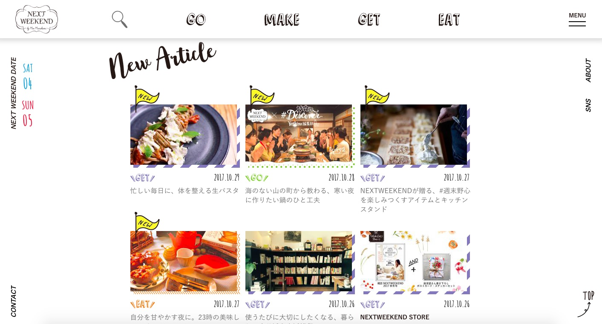
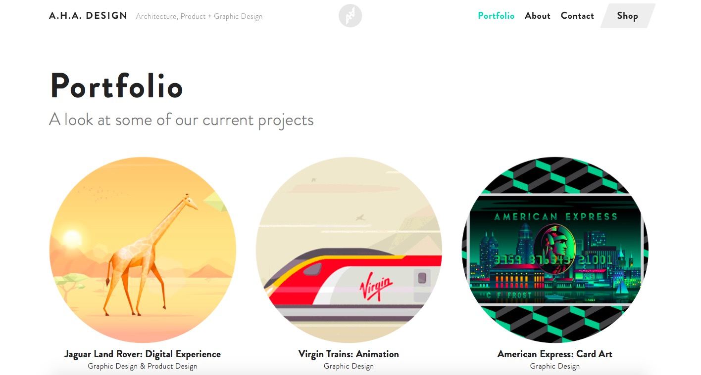
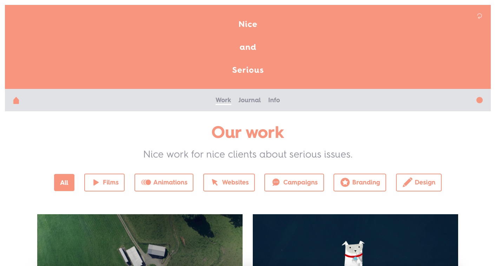
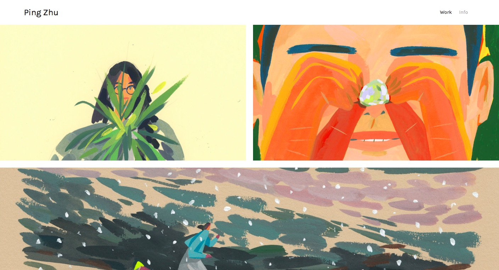

Theme - A Portofolio Site
For my final site project, I would like to continue and develop my portfolio site. However, the theme of my site will be the same but I would like to start over with my portfolio site. I want my site to be more fun and interactive for users, so that they are more interested in what I do. At the same time, I want my site to be simple and clear. I want the main page to be a page with all my works so that the user can feel what kind of work I do right away. This could be a thumbnail gallery with navigation to a page for each projects. I also want to work more with the background, not just having a white background but some element to make it original and unique. Also playing around with navigation and hover would make my site more interactive. In order to achieve this, I found some inspirations from different portfolio sites that I liked.
Inspiration Sites
An interactive site
A site that has unique navigations and hovers
Inspiration for color choices and a clear layout
A site with simple layout
